MEET THE TEAM
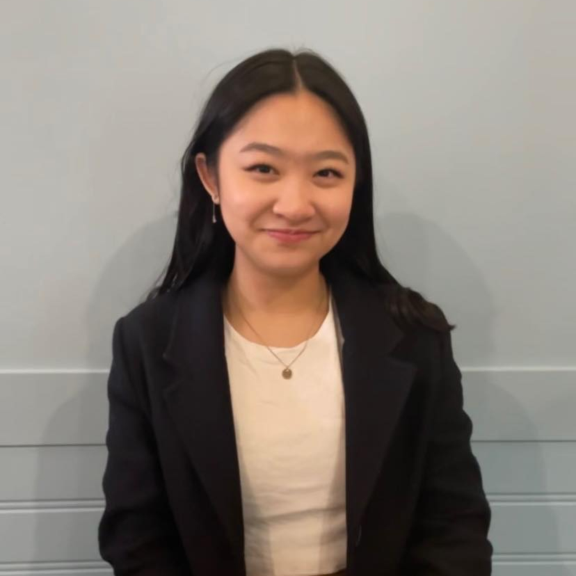
Adeline Chan
Co-Founder Email: adelinechan13@gmail.com Growing up, technology has advanced so drastically I often find it difficult to keep up with the new trends. Reminiscing about the past, I wanted to create an opportunity for youths to revisit their childhood and connect with seniors once again where they can learn about their knowledge and hear advice from their years of experience. I believe there is an importance to reach out to previous generations and bridge the gap as they are the key to creating a successful future.
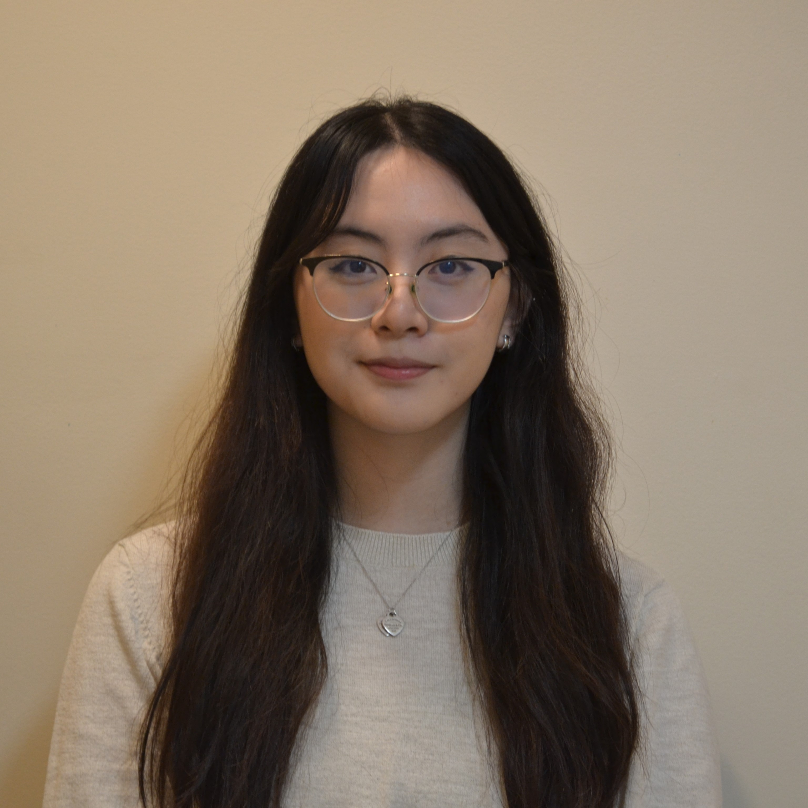
Lynn Chen
Co-Founder Email: lynnjychen@gmail.com I joined The Morning Mission to not only reconnect myself with the elderly in my community but to tackle the issue of senior social isolation amplified by the pandemic. Whether through connective events, interactive activities, or loving cards, our team of youth all over the lower mainland works together to make change happen. The elderly play an essential role in our community, and this nonprofit highlights that.
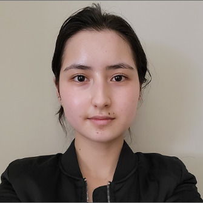
Zohal Aryn-Ciyear
Vice-President Email: zohalaryn.ciyear@gmail.com Following my volunteer work and various endeavors that focused on improving my community and school environment, I decided that it was time to be involved in an organization that focused on supporting our most vulnerable and disregarded generation. In a world that may be unfamiliar to them in our day and age, my priority is to reconnect the generations and to create many streams of community support towards seniors.
Angel Hsieh
Secretary Email: Angelhsiehyy@gmail.com I Joined TMM because I wanted to learn about the past of older generations, and be able to share their stories to the world. After being reached out to by one of the co-founders I immediately wanted to join and be able to help bring the older and younger generation together. I believe that we have a lot to learn from each other.
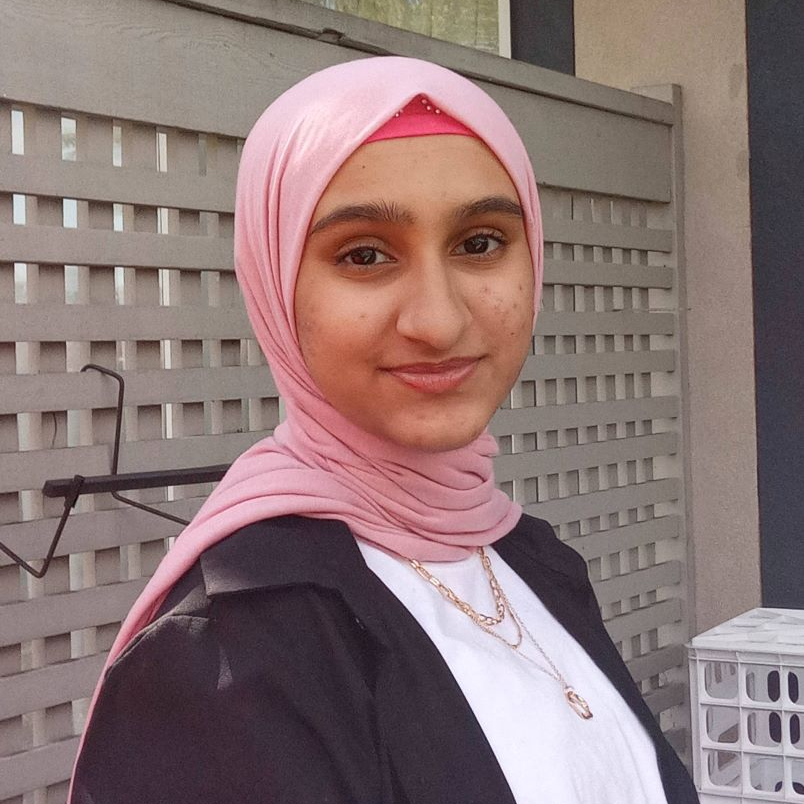
Menam Mahmood
HR Head Email: menam6421@gmail.com Connecting to our elders is so important, especially since they are older and wiser than us, and that’s why I decided to join TMM! As a young person in the community, I hope to connect with fellow seniors and encourage my fellow peers to as well! It would also help me understand things from a different perspective!
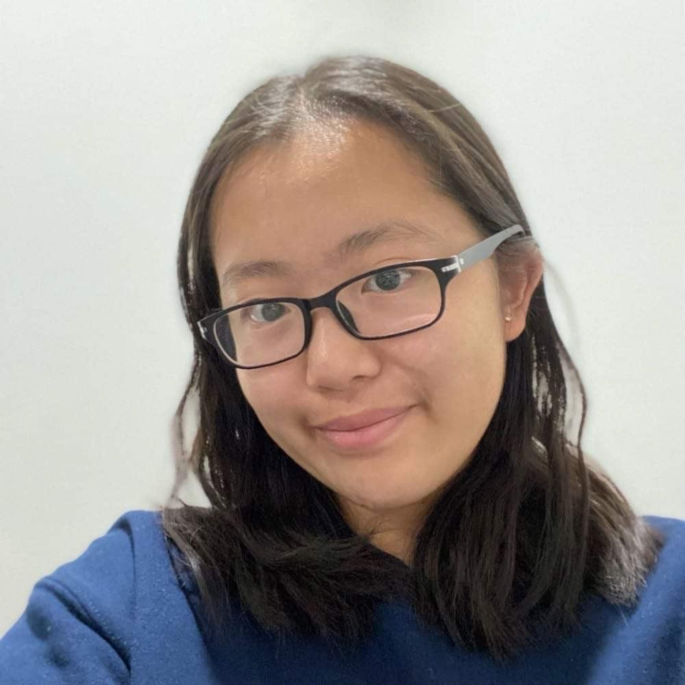
Vania Ma
HR Member Email: vaniama0725@gmail.com Within the many communities I am part of, I have noticed a disconnect between the youth and and older generations, and with this, I decided to join TMM to help break the disconnect with a group of passionate people. I also joined TMM to gain a better understanding of people in different generations by engaging with them more.
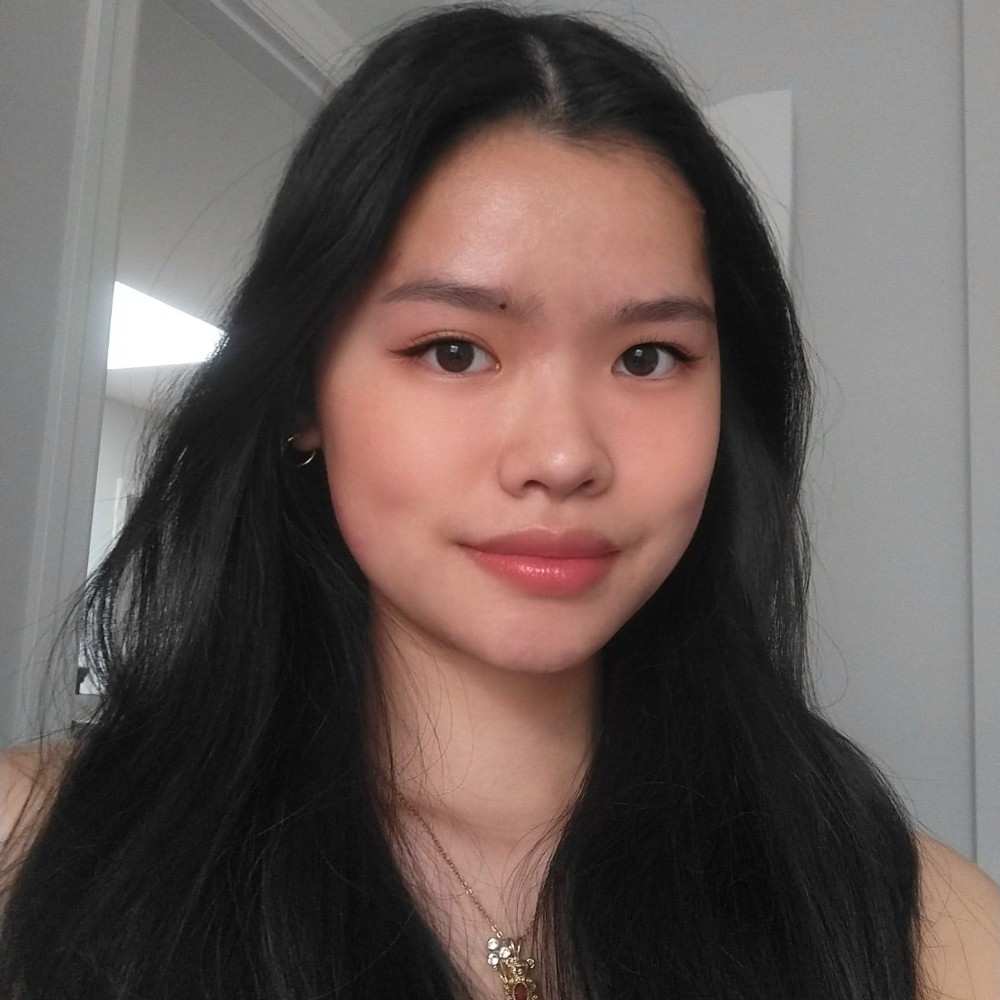
Sarah Seto
Public Relations Director Email: sarahseto8125@gmail.com When my grandpa entered a long-term care home, only then did I notice the generational gaps between youth and seniors and the ignorance senior loneliness was faced with. I joined TMM to educate our generation and reduce the stigma around seniors, and also to bridge the gap linking us together.
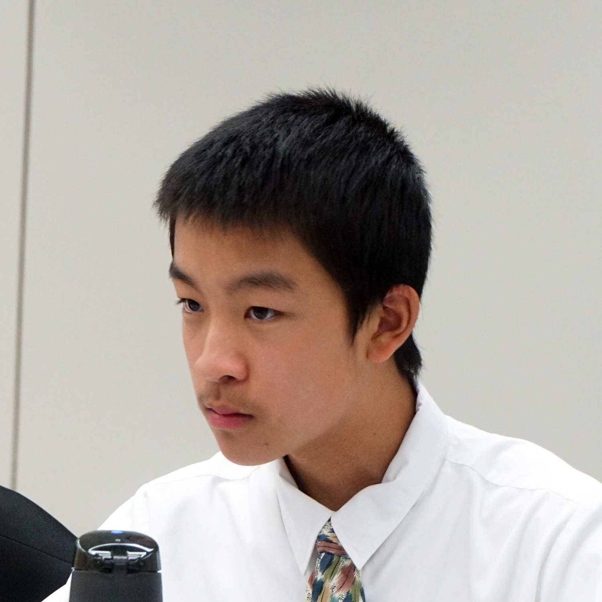

Eva Tan
Head of Marketing Email: evaztan10@gmail.com I joined The Morning Mission as a way to engage with seniors! I know that seniors weren’t always seniors and used to be in a similar position as I am right now, a teenager with teenager issues. I think they are some of the most experienced people and hope to learn from them.
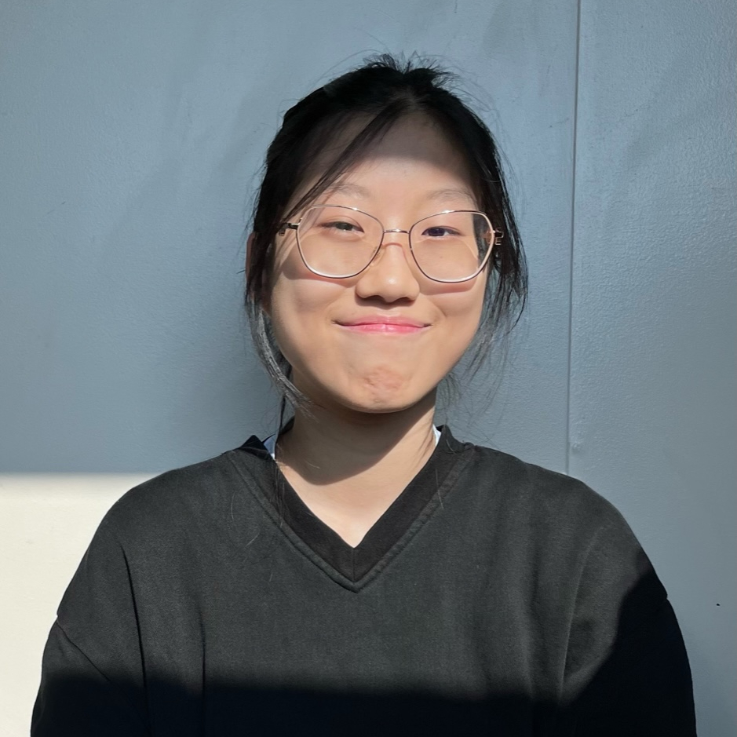
Leelu Li
Marketing member Email: bleeblu81@gmail.com I joined TMM because I love nonprofit organizations that allow youths and older generations to bond and form connections. These type of clubs allows us to become more connected with our community.
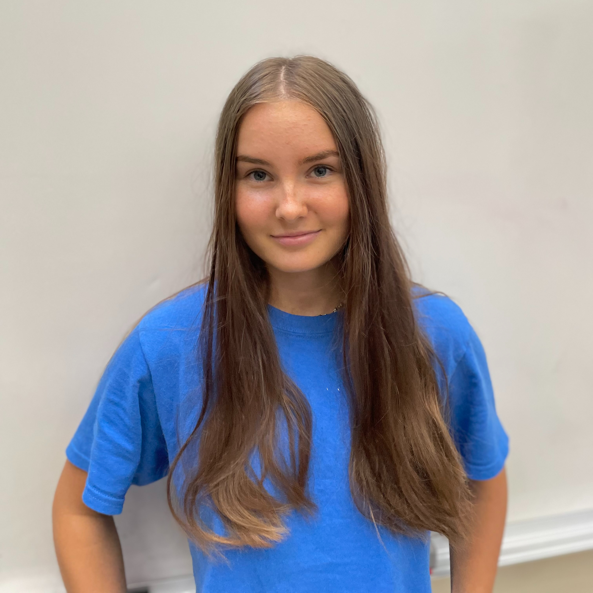
Katia Deyneko
Marketing Member Email: Katiadeyneko@gmail.com Growing up without my grandparents by my side, it’s made me realize that the elderly population experiences feelings of loneliness, alongside depression. With the help of a strong and dependent team, I believe that we can make an impact on the elderly generation and help the society around us stay connected !!
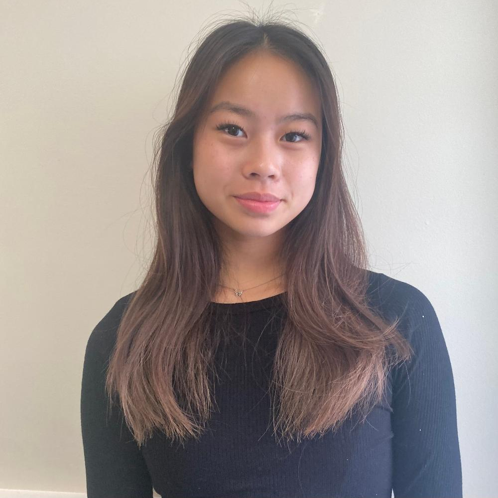
Mischa Ang
Marketing member email: mischaang03@gmail.com I have always admired and valued the relationships made between seniors and the younger generation. However, throught the years I began to notice a gap forming. By joining TMM, I hope to strengthen these relationships and create new bonds between both generations.
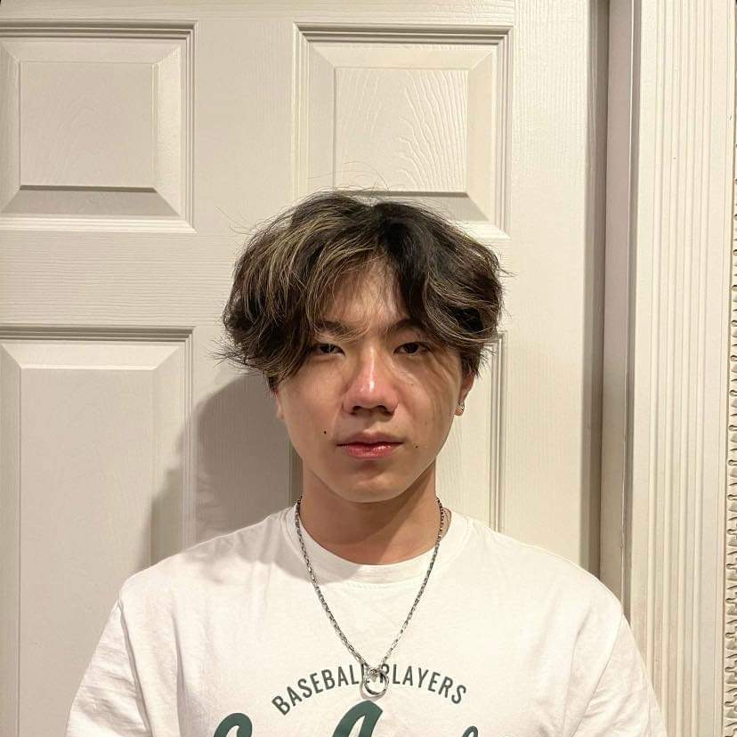
Colin Chen
Finance Director Email: colinchenemail@gmail.com I joined TMM because I realized the importance of having a strong relationship with older generations. After my grandparents all passed, I finally recognized that they had provided me with insight and guidance that I would not have been able to get due to my inexperience. I joined so that other youths would not miss out on these opportunities.
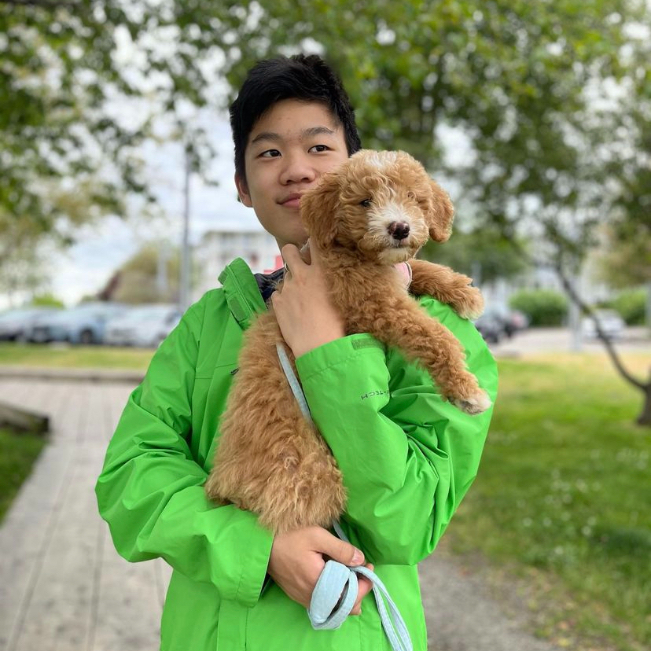
Matthew Ji
Technology Director Email: jimatthew12@gmail.com I joined The Morning Mission because I believe that connecting to our elders is very important as they have gone through so much more than we have and are most likely able to give us advice on what to do next in our lives if we ever hit a roadblock. I personally was not privileged enough to talk to my grandparents a lot as they are very far away making communication very difficult. |
Scroll to top